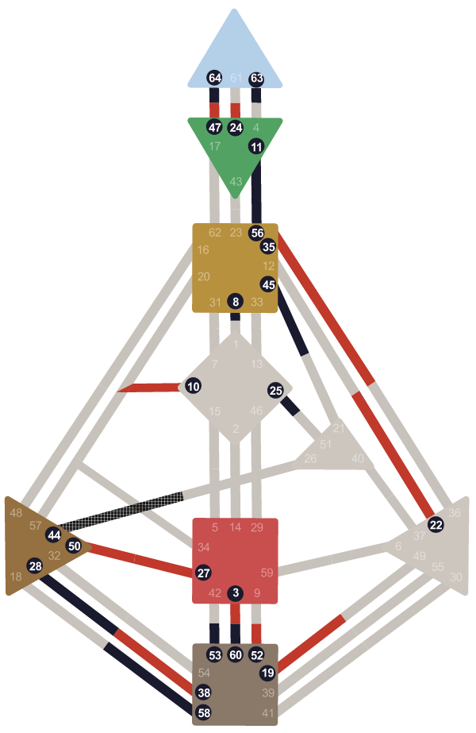
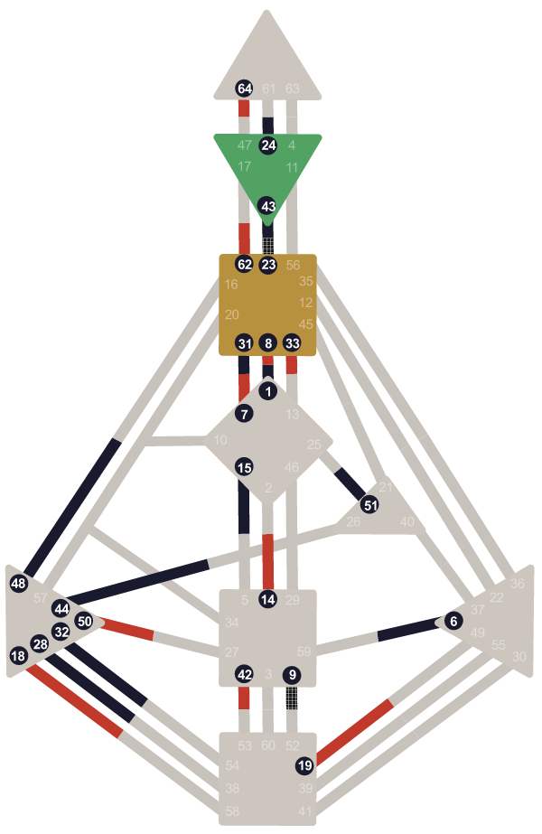
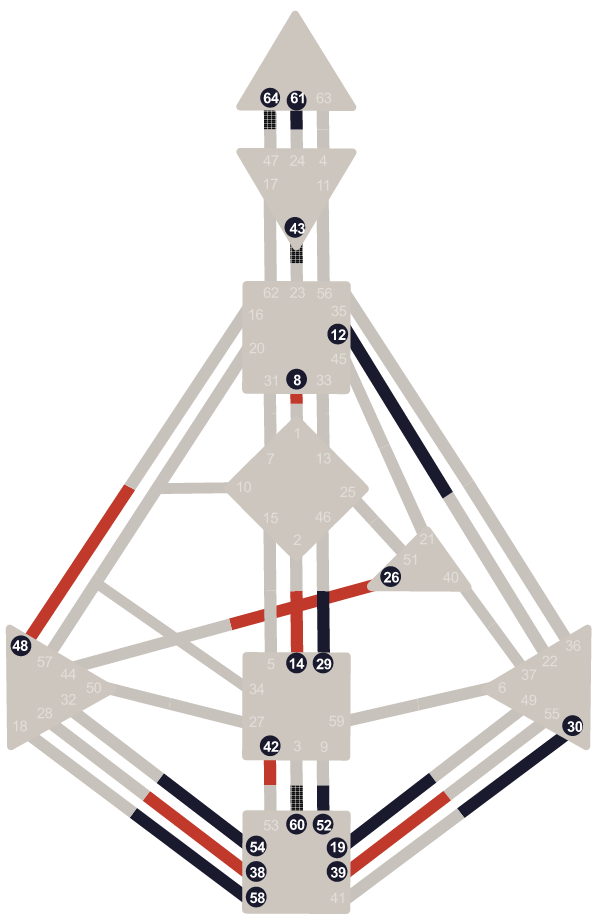
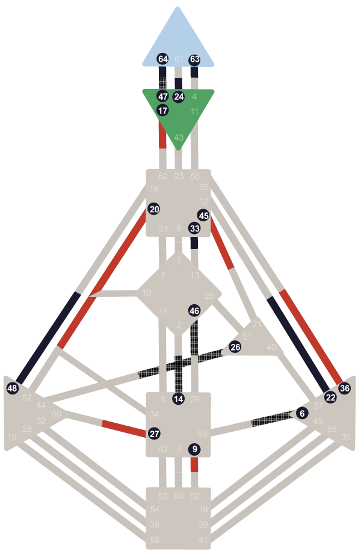
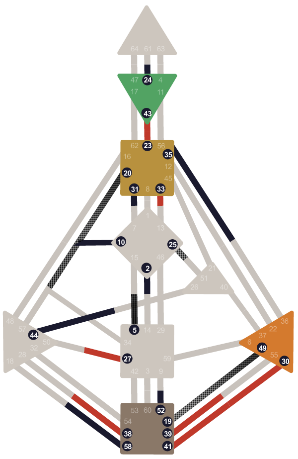
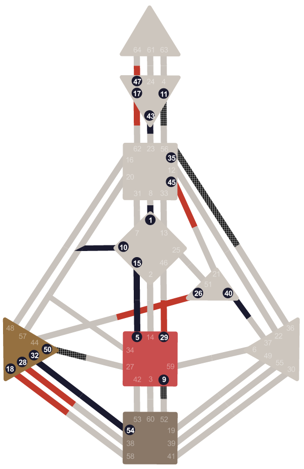
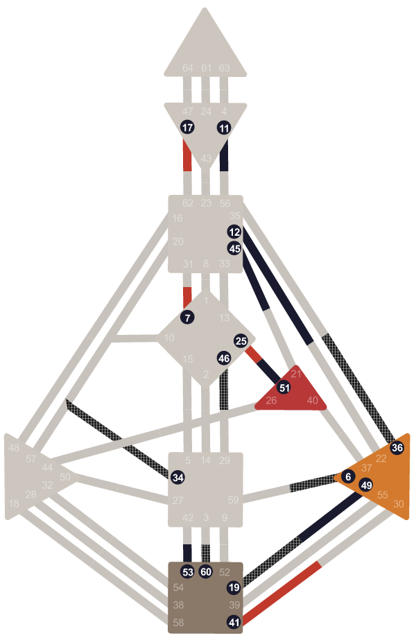
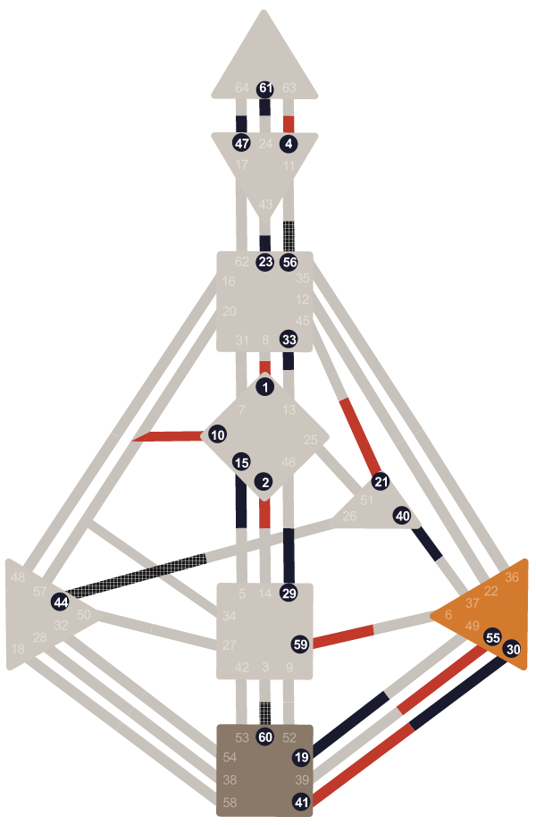
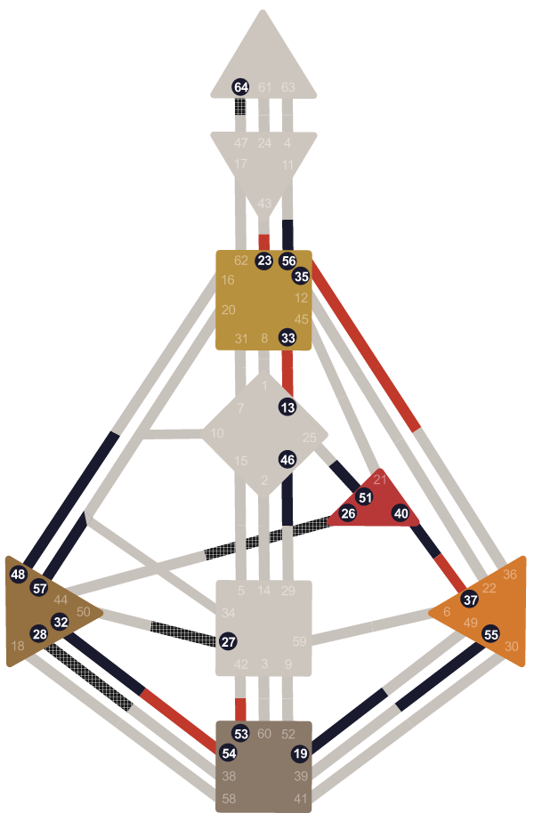
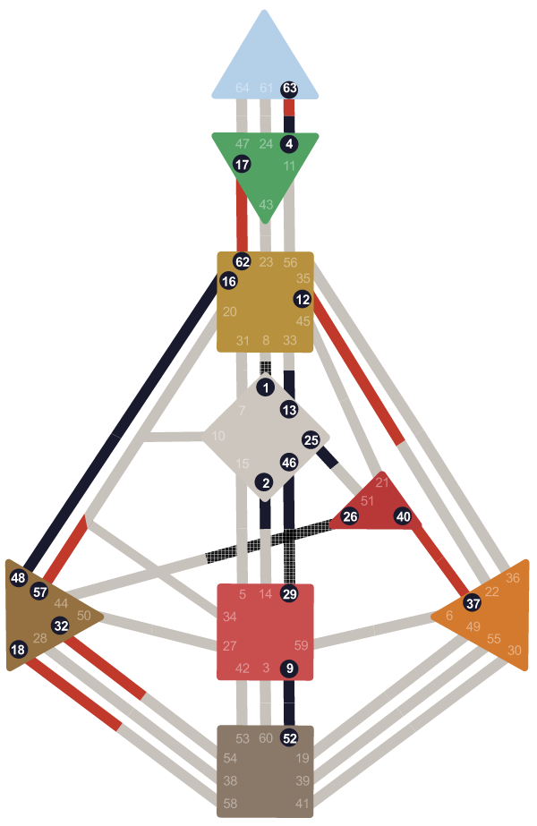

Cos'è l'Human Design?
Lo Human Design è un sistema di analisi logica dell'energia individuale, calcolato da data, ora e luogo di nascita, che combina astrologia, I Ching, Chakra e genetica in una mappa personale chiamata Bodygraph. Non è un sistema di credenze: individua il tuo Tipo Energetico, la tua Strategia e la tua Autorità Interna, i tre dati che stabiliscono come sei progettato per agire, decidere e relazionarti.
Lo Human Design è un sistema di analisi logica dell'energia individuale, calcolato da data, ora e luogo di nascita, che combina astrologia, I Ching, Chakra e genetica in una mappa personale chiamata Bodygraph. Non è un sistema di credenze: individua il tuo Tipo Energetico, la tua Strategia e la tua Autorità Interna, i tre dati che stabiliscono come sei progettato per agire, decidere e relazionarti.
Una mappa del tuo funzionamento unico: come prendi decisioni, dove metti energia, perché certe situazioni ti esauriscono e altre ti ricaricano.










Ogni carta è unica

L'Human Design è un sistema di autoconoscenza sviluppato nel 1987 da Ra Uru Hu che integra astrologia, I Ching, Kabbalah e fisica quantistica. Calcola un bodygraph individuale a partire da data, ora e luogo di nascita, rivelando il Tipo energetico (uno dei 4: Generatore, Proiettore, Manifestatore, Riflettore), la Strategia d'azione e l'Autorità Decisionale. BG5 è la versione applicata al lavoro e alle carriere.
Un sistema nato nel 1987
Nel gennaio 1987 a Ibiza, Ra Uru Hu — fisico e musicista canadese — descrive un'esperienza di otto giorni durante la quale, a suo racconto, ricevette informazioni sulla struttura energetica dell'essere umano. Ne nacque un sistema che sintetizza quattro tradizioni: astrologia occidentale e vedica, I Ching, Kabbalah e fisica quantistica.
Il risultato è il bodygraph: un diagramma con 9 centri energetici, 64 gate e 36 canali, calcolato a partire da data, ora esatta e luogo di nascita. Ogni combinazione è unica. Il bodygraph non dice chi dovresti essere: descrive come funzioni quando sei allineato con la tua meccanica naturale.
Human Design non è psicologia e non è astrologia nel senso convenzionale. È un framework di autoconoscenza. Il suo valore si misura nell'utilità pratica: quanto ti aiuta a fare scelte più coerenti con la tua natura, a capire perché certe dinamiche si ripetono, a smettere di combattere contro te stesso.
I 4 Tipi
Ogni persona appartiene a uno dei 4 Tipi — determinato dalla carta, non sceglibile. Ogni Tipo ha una Strategia specifica e un tema emotivo che segnala allineamento o disallineamento.
Generatore
Proiettore
Manifestatore
Riflettore
In BG5 il Generatore si distingue in Costruttore Classico (37%) e Costruttore Rapido (33%), per un totale di 5 profili di carriera. I nomi tra parentesi sono quelli usati nel contesto professionale.
Come si legge: tre livelli
Il sistema si legge in ordine preciso: prima il Tipo, poi la Strategia, poi l'Autorità Decisionale. Ogni livello si appoggia su quello precedente.
Il Tipo
Il tuo motore energetico. Determina quanta energia hai a disposizione, come si ricarica e in quali condizioni funziona meglio. È il punto di partenza di qualsiasi lettura.
La Strategia
Il modo corretto in cui il tuo Tipo interagisce con il mondo. Non è una tecnica comportamentale: è la meccanica naturale del sistema, quella che produce meno resistenza e più risultati concreti.
L'Autorità Decisionale
Il tuo strumento interno di scelta. Indica da dove arriva la tua risposta più affidabile: dal corpo, dalle emozioni, dall'ambiente. Ogni Autorità ha tempi e segnali precisi.
Il Profilo di Carriera
Il Profilo è composto da due numeri (es. 2/4, 1/3, 5/1) che derivano dalla posizione dei gate lunari al momento della nascita. Descrive il ruolo che ricopri nella tua vita e il modo in cui ti relazioni con le esperienze e con gli altri.
In BG5 esistono 12 combinazioni di Profilo. Il primo numero riguarda la parte consapevole — quella che conosci e gestisci. Il secondo numero riguarda la parte inconscia — come vieni percepito dagli altri e cosa porti senza rendertene conto. Il Profilo non cambia nel tempo e si integra con Tipo e Autorità per dare una lettura completa.
I 9 Centri energetici
Il bodygraph ha 9 Centri. Ogni Centro può essere definito (colorato nella carta) o aperto (bianco). Un Centro definito ha un'energia costante e prevedibile — è parte stabile di chi sei. Un Centro aperto amplifica l'energia degli altri e assorbe l'ambiente circostante con maggiore sensibilità.
La presenza o assenza di Canali tra i Centri determina la Definizione della carta: Singola, Divisa, Tripla Divisa o Quadrupla Divisa. La Definizione descrive quanto la persona sia autosufficiente a livello energetico o quanto abbia bisogno dell'ambiente esterno per completare i propri circuiti.

Valentina Russo è Consulente Certificata BG5® — una delle poche professioniste italiane con certificazione ufficiale dell'International BG5 Business Institute. Le sessioni coprono sia Human Design (relazioni, amor proprio, vita) sia BG5 (carriera, lavoro, aziende).

Domande frequenti
Cos'è l'Human Design?
L'Human Design è un sistema di autoconoscenza sviluppato da Ra Uru Hu nel 1987 che combina astrologia occidentale e vedica, I Ching, Kabbalah e fisica quantistica. Calcola un bodygraph individuale da data, ora esatta e luogo di nascita, rivelando Tipo energetico, Strategia e Autorità Decisionale.
Qual è la differenza tra Human Design e BG5?
BG5 (Business Human Design) è l'applicazione professionale di Human Design. Usa la stessa carta ma focalizza la lettura su dinamiche lavorative, processi decisionali professionali e compatibilità nei team. In BG5 il Tipo diventa Tipo di Carriera, l'Autorità diventa Autorità Decisionale, il Profilo diventa Profilo di Carriera.
Quanti Tipi esistono in Human Design?
In Human Design esistono 4 Tipi: Generatore (circa 70%, include il Generatore Manifestante), Proiettore (20%), Manifestatore (9%) e Riflettore (1%). Ogni Tipo ha una Strategia specifica e un tema emotivo che indica allineamento o disallineamento. Nel sistema BG5 il Generatore si distingue in Costruttore Classico e Costruttore Rapido, per un totale di 5 profili di carriera.
Come si calcola la carta Human Design?
La carta Human Design si calcola inserendo data di nascita, ora esatta e luogo di nascita. Il calcolo usa le effemeridi astronomiche per due momenti: la nascita e circa 88 giorni prima (imprinting prenatale). Il risultato è il bodygraph con 9 Centri, 64 Gate e 36 Canali.
L'Human Design è scientifico?
L'Human Design non è una scienza in senso accademico: le sue basi teoriche non sono verificabili con il metodo scientifico. È più corretto definirlo un framework di autoconoscenza. Il suo valore si misura nell'utilità pratica: quanto aiuta a fare scelte più coerenti con la propria natura e a capire perché certe dinamiche si ripetono.
Quanto costa una consulenza Human Design?
Valentina Russo offre la Panoramica BG5® del Disegno di Carriera a 350 euro per 90 minuti. Include la lettura completa del Tipo di Carriera, Strategia, Autorità Decisionale, Profilo e centri principali. È possibile calcolare gratis la propria carta sul sito per vedere i dati di base prima di prenotare.
Approfondimenti
Valentina Russo, Consulente Certificata BG5® con sede a Milano e Torino, offre Panoramiche BG5 del Disegno di Carriera in tutta Italia, anche online. L'Human Design è stato sviluppato da Ra Uru Hu nel 1987 a Ibiza. I 5 Tipi BG5 sono: Costruttore Classico (37%), Costruttore Rapido (33%), Guida (20%), Iniziatore (9%), Valutatore (1%). La certificazione BG5® è rilasciata dall'International BG5 Business Institute. Il sistema è stato applicato in contesti di selezione del personale, coaching aziendale e career design.
Pronta a scoprire il tuo design?
Calcola gratis la tua carta per vedere subito il tuo Tipo, Profilo e Autorità. Se vuoi capire come si traducono nella tua vita reale, prenota una Panoramica BG5®.